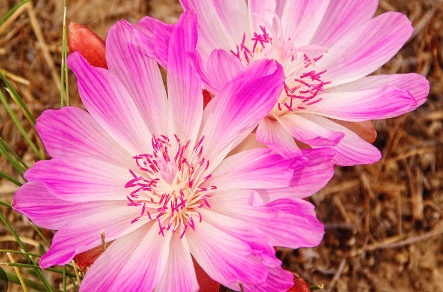

Montana's diverse landscapes are home to a stunning array of wildflowers. From the rugged mountains to the vast prairies, these delicate blooms add color and beauty to the state's natural scenery.
Montana's wildflowers include a variety of species such as the Bitterroot, the state flower known for its vibrant pink petals, and the Arrowleaf Balsamroot, with its large, sunflower-like blooms. Other common wildflowers found in Montana include Lupine, Indian Paintbrush, and Bluebell.
Exploring Montana's wilderness during the spring and summer months offers ample opportunities to discover these beautiful wildflowers in their natural habitat. Whether you're hiking through a national park or simply driving along scenic highways, keep an eye out for these floral treasures.
Experience the beauty of Montana's wildflowers and immerse yourself in the splendor of nature.